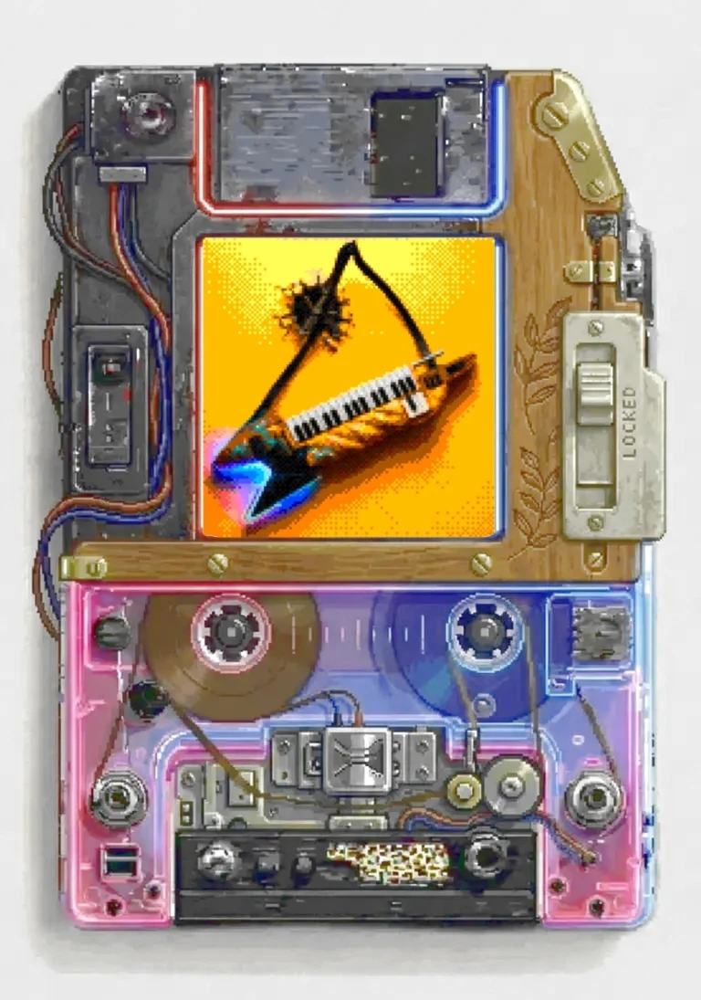

MUSIC
Du möchtest meine Musik unterstützen?
Drei Wege: Donate (Spende), persönlicher Kauf (über Treffen) oder ein Album gegen PayPal-Nachweis. Danach erhältst du von mir einen persönlichen Download-Token.
Unterstützung und Begegnung
Danke an alle, denen die 25 € damals bei einem persönlichen Gespräch auf der Straße zwischen 2012 und 2016 nicht zu viel waren, um mich als regionalen österreichischen Künstler mit kroatischen und französischen Wurzeln und Tonstudio zu unterstützen.
Ihr hättet so tun können, als würdet ihr gerade athletisch durch unsichtbares Wasser schwimmen und konzentriert weitergehen.
Aber ihr seid stattdessen stehen geblieben. Danke für euren Mut, euch auf eine Begegnung einzulassen, auch dort, wo Fremdenangst, kulturelles Desinteresse oder ganz gewöhnliche Wurstigkeit passiert.
Kultur und ihr Wert
Ich beobachte zunehmend eine Entwertung kultureller und musikalischer Leistungen. Praktikabilität und Hands-on-Mentalität sind wertvoll. Aber wenn daraus die Vorstellung entsteht, kulturelle Arbeit sei weniger wert, nur weil sie nicht unmittelbar messbar oder wirtschaftlich verwertbar ist, dann finde ich das falsch.
Wie viel kostet die menschliche Bemühung, andere Menschen dazu einzuladen, Dinge aus verschiedenen Perspektiven zu betrachten? Und wie viel ist uns diese Bemühung wert?
In der Hetze und künstlich erzeugten Konfliktlandschaft ist es hier manchmal leichter, Missverständnisse zu monetarisieren als konstruktive Ideen. Nachhaltige Arbeit hingegen ist wichtiger als geplante Obsoleszenz, nur um anschließend das nächste Produkt zu verkaufen.
Künstlernähe und Austausch
Ich habe Menschen außerhalb meiner eigenen Comfort-Zone angesprochen, Abfuhren kassiert und aus Tausenden Begegnungen über euch gelernt.
Vielleicht fühlt sich eine persönliche Begegnung für manche Menschen auch wie ein Austausch an, bei dem sie nicht sicher sind, ob sich diese Begegnung überhaupt auszahlt.
Wir haben über Musik gesprochen. Natürlich fließt dabei auch Geld. Überall, wo Menschen zusammenkommen, entstehen Ideen, Arbeit, Austausch und wirtschaftliche Transaktionen. Im besten Fall schaffen wir etwas Nachhaltiges, das jeder haben will.
Schließlich gibt es leider genügend Institutionen und Geschäftsmodelle, die wirtschaftlichen Erfolg daraus ziehen, Konflikte oder Dinge auf Kosten anderer zu verwerten. Deswegen lasst uns hier etwas aufbauen, das jedem nützt.
Der Preis
(Vedran setzt seine Häuptlingsfedern auf.)
Sind 25 € zu viel für ein Musikalbum, das euch persönlich vom Künstler angeboten wird?
Hat man als Mensch noch die Kapazität, sich länger als 15 Sekunden mit etwas auseinanderzusetzen, was einem nicht wie ein Dopaminkeks erscheint?
Wie viele Nächte braucht es, einen guten Song zu schreiben?
Und kann man als Musiker voraussehen, was das eigene Werk in der Welt bewegen wird? (Genau diese Frage ist wichtig.)
Es geht nicht nur darum, dass Künstler bezahlt werden. Es geht um Respekt. Für den Erschaffer und den Verbraucher.
Mozart und die kulturelle Doppelmoral
Ich verstehe bis heute nicht ganz, wie Wien sich als eine der lebenswertesten Städte der Welt feiert und gleichzeitig Mozart und Falco-Pins als Kulturgut am feinen Mantel spazieren tragen kann, während lebende Künstler manchmal als Belästigung wahrgenommen werden.
Vielleicht können wir unser Abbild in der glanzpolierten Glatze Mozarts endlich sehen, wenn er seine Perücke abnimmt und all die Schokokugeln darunter rauskugeln – und dann erkennen wir, wer wir wirklich sind (oder dass wir zu viele Pralinen bestellt haben).
Aus einer „Kleine Nachtmusik“ wird eine große Diät fürs Granteln.
Begegnung und Aufmerksamkeit
Vielleicht fühlt sich eine persönliche Begegnung aber auch wie ein Austausch an, bei dem nicht sofort klar ist, was man dafür zurückbekommt.
Und vielleicht liegt genau darin eine interessante Frage: Wie viel Raum geben wir eigentlich Dingen, deren Wert wir nicht innerhalb der ersten drei Sätze erkennen können?
KI und menschliche Kreativität
Manchmal entsteht ein kompletter Track nur aus Gitarre und Gesang.
Künstliche Intelligenz ist für mich nur ein Hilfsmittel. Ich sehe keinen Sinn darin, einen kompletten Track aus dem Nichts erzeugen zu lassen und ihn anschließend ohne eigene gestalterische Leistung zu personalisieren.
Was mich interessiert, ist Mitbestimmung statt Vorbestimmung.
Mir ist dabei Transparenz wichtig, um zu zeigen, wo KI verwendet wurde und wo nicht.
Bands und Livekultur
Bands sollten mehr sein als ein Dresscode, ein paar Getränke an der Theke und die Hoffnung, das Vertrauen und die Erlaubnis auszunutzen, beim ersten Date einen Piledriver auszuprobieren.
Eine Band ist Zusammenarbeit. Sie ist Kommunikation, musikalisches Arrangement, Proben, Fehler, Wiederholungen ... Das erfordert Flexibilität.
Und die Technologie wird nicht verschwinden. Im Gegenteil. Open-Source-Modelle und neue Werkzeuge werden weiterentwickelt und weiter benutzt werden.
Während wir uns darüber streiten, werden große Unternehmen genau prüfen, wo KI menschliche Arbeit billiger ersetzen kann.
Und niemand wird denjenigen mit dem Geld einfach vorschreiben, wann sie ihre wirtschaftlichen Interessen zurückstellen sollen. Schließlich stehen genügend Anwälte bereit, um aus jedem neuen Auftrag eine weitere Auseinandersetzung über Rechte, Eigentum und Rendite zu gewinnen.
Die eigentliche Herausforderung ist, dass Menschen mit weniger finanziellen Ressourcen ihre Rechte genauso wirksam verteidigen können müssen wie diejenigen, die sich ganze Kanzleien leisten können.
Es ist allerdings deutlich schwieriger, die Taube der Regierung zu fangen, die gerade den Zwanzigeuroschein geklaut hat, während man sich auf der Parkbank mit Bier über Technologie aufregt.
Die Unterhaltungsindustrie
Die mit den Taschen voller Geld kopieren uns immer wieder dieselben Geschichten. Sie bauen uns neue Freddies und Johnnys, damit jeder mitfiebern kann. Dabei wäre es vielleicht interessanter, wenn wir selbst wieder etwas aufziehen würden, statt nur zuzuschauen. Aber dabei sein ist schließlich alles, auch wenn man vielleicht nur zusieht?
Rebellion
Rebellion um der Rebellion willen ist nur ein Energy Drink mit unklarer Gebrauchsanweisung.
Danke
Wenn meine Arbeit zu dir spricht: Danke, dass du hier bist.
Und wenn nicht: ebenfalls danke.
Geh deinen Weg.
Lightning Horn Unicorn
